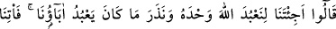
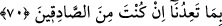

durumunuzu düşünün, Allah Teâlâ’nın sizi başkalarının yerine getirmesini hatırlayın.
et-Te’vîlâtü’n-Necmiyye’de şöyle denilmiştir: Allah Teâlâ yaratılanların bir kısmını,
diğer bir kısmından sonra getirmiş ve hepsini yeryüzünde halifeler kılmıştır. Onlardan
bir cins yok olur olmaz, onların yerine yine aynı cinsten başka bir kavmi getirmiştir.
Aynı şekilde gaflet ehlinden bir grup yok olduğu zaman aynen onlar gibi başkalarını
getirir. Vuslat ehlinden bir grup ortadan kalkınca yine yerlerine vuslat ehlinden başka
bir grup getirir.
“Ve yaratılışta” benzersiz olarak yaratmakta ve şekil vermekte veya insanlar içinde
“sizi onlardan” boy ve kuvvet bakımından “üstün kıldı.” Çünkü Âd kavmi, uzun boylu
ve güçlü kuvvetli idiler. Zamanlarında onlar gibi büyük vücudlu kimse yoktu. Onların
boyu uzun olanları, yüz arşın, kısa olanları ise altmış arşındı.
Vehb demiştir ki: Onlardan birinin kafası, bir kubbe gibiydi. Gözleri ve burun
delikleri de yırtıcı kuşların yuva yapacağı kadar büyüktü.
Ayetin işârî yorumu şöyledir: Allah Teâlâ, bir kavmi öncekilere nazaran yaratılışta iri
yaptığı gibi, bir kavmi de öncekilere göre ahlak bakımından üstün kılmıştır. Bedenlerine
göre şahıstan şahısa bir farklılık meydana getirdiği gibi manevî değerler bakımından da
kavimden kavime farklılık yaratmıştır.
Ferezdak, şöyle der:
İsim ve künyeleri birbirine benzeyen çok kimse vardır.
Fakat yaratılış bakımından birbirlerinden ayrılmaktadırlar.
Yine bu mânâda Hâkânî de şöyle der:
Kamışlıkta bütün kamışlar aynı renktedir, ancak
Birinden şeker elde edilir, diğerinden hasır
“O halde Allah’ın nimetlerini hatırlayın ki” nimetleri anmak sizi şükre götürsün.
Şükür de sizi zorluklardan kurtuluşa ve istenilen gayeye ulaştırır. Böylece “kurtuluşa
eresiniz.”
70. Dediler ki: Sen bize tek Allah’a kulluk etmemiz ve atalarımızın tapmakta
olduklarını bırakmamız için mi geldin? Eğer doğrulardan isen, bizi tehdit ettiğini
(azabı) bize getir.
Kavminin taklîde sarılmaktan başka verecek cevapları kalmayınca bu yüce nasihatlara